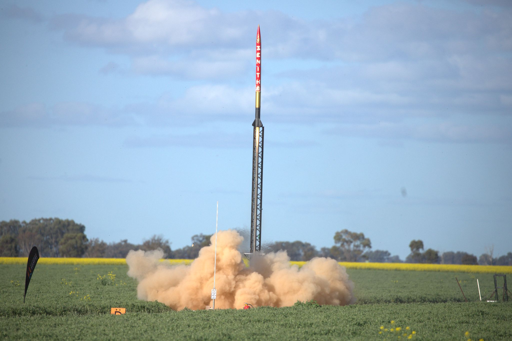
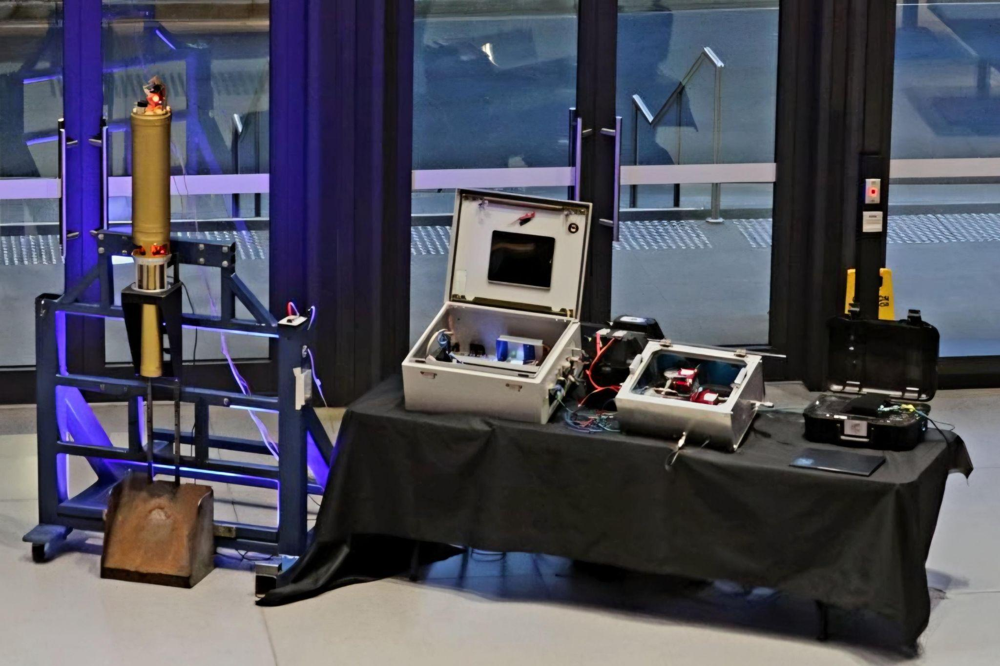

Liquid Rocket Engine Development & Testing
Propulsion Embedded Systems


Leading the design, manufacturing, and testing of a liquid bipropellant rocket engine for TREL's competition vehicle as Propulsion Design and Test Lead. Managing the complete development cycle from initial CAD design through hot-fire testing, while coordinating with cross-functional teams and implementing comprehensive safety protocols.
Key Accomplishments:
- Engine Design: Designed thrust chamber, injector, and feed system using SolidWorks and computational fluid dynamics analysis to optimize combustion efficiency and cooling
- Test Infrastructure: Built automated test stand with 20+ sensors for pressure, temperature, thrust, and flow rate monitoring with real-time data acquisition
- Data Acquisition: Developed custom DAQ system using STM32 microcontroller sampling at 1kHz across all channels for comprehensive test data
- Safety Systems: Implemented redundant control systems with automatic shutdown sequences and emergency procedures, ensuring safe operation during high-risk testing
- Analysis Tools: Created Python-based post-processing pipeline for performance analysis and visualization, enabling rapid design iteration
- Automation: Programmed automated test sequences reducing manual operations and improving repeatability while minimizing human error
- Team Leadership: Managing cross-functional team for propulsion system development, coordinating between design, manufacturing, and testing phases
Technical Stack:
SolidWorks, Python, C, STM32, LabVIEW, MATLAB, CNC Machining, Propulsion Theory, CFD Analysis
Impact:
Reduced test setup time by 40% through automation. Successfully conducted multiple hot-fire tests with comprehensive data collection enabling rapid iteration on engine design. Implemented safety protocols that have maintained perfect safety record across all testing operations.